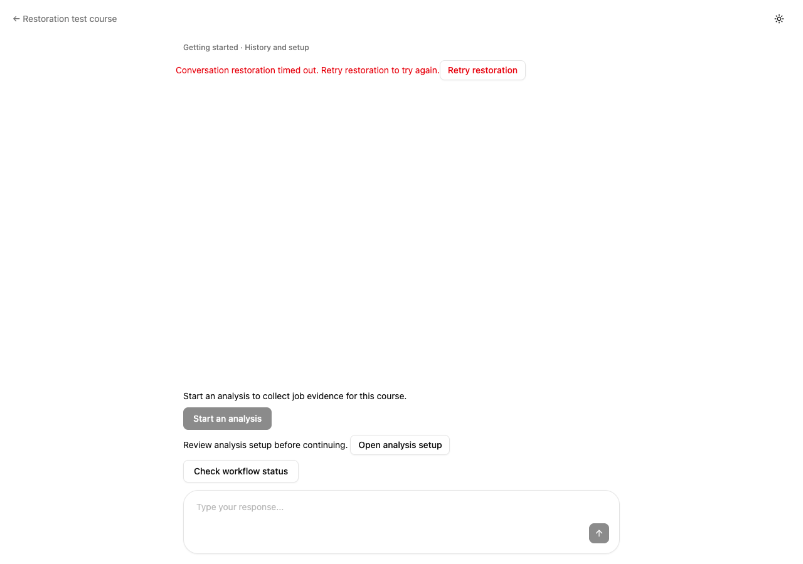
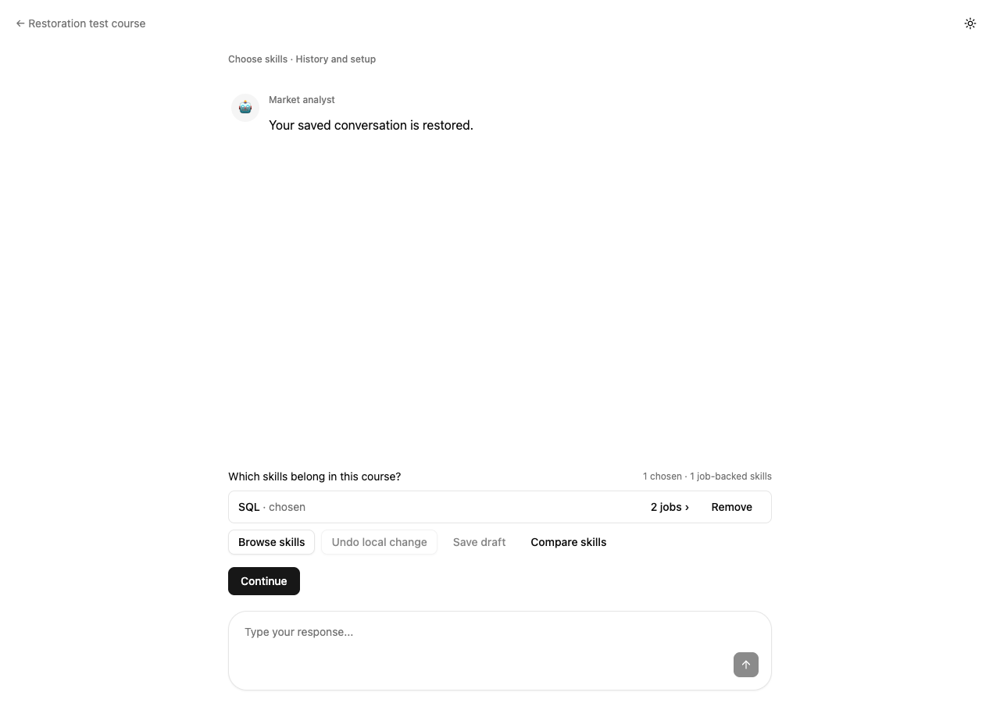

Your conversation can load again.
Chrome was downloading several megabytes of uncompressed saved conversation and evidence. The page also had no deadline if a request stalled, so “Restoring conversation…” could remain indefinitely.
Both fixes are live: large restoration responses are compressed, and a stalled load now offers Retry restoration after 30 seconds.
Open your Big Data workspace ↗Same evidence, less to download
The production data sample shrank from 6.58 MB to 0.63 MB, with exact decompression back to the original bytes. Conversation history, job links and skill details remain complete. Agent streaming still delivers its first chunk before the stream completes.
The sample measures compression, not end-to-end loading time. State size uses the persisted snapshot. The exact first incident cannot be reconstructed, but Chrome’s large uncompressed transfer and the endless-wait failure were directly verified.
Checked with your Big Data course
Your signed-in Chrome page restored after the backend release. Read-only database checks confirm the same 38 documents, 58 job-backed skills and two saved choices, with four original posting links for each chosen skill. Your draft and publication status are unchanged.
A stalled request has a clear next step
A headless test deliberately held a response open. The spinner stopped after 30.2 seconds. Clicking Retry restored the conversation and saved selection. There were no automatic retries, writes or browser errors.




Screenshots use synthetic test data. The real teacher account was checked separately in Chrome.
Verification and technical records
- 107 affected frontend tests passed; timeout regressions failed before the fix.
- 29 backend compression tests and 9 existing restoration route regressions passed. Coverage includes byte equality, request negotiation, small responses, real database restoration and unbuffered streaming.
- Fresh reviewers independently reran both affected test sets. A compression compatibility finding was fixed and reviewed again.
- Frontend lint/build and backend Ruff checks passed. Existing unrelated frontend warnings remain.
- The exact production backend image passed an offline import and compression smoke test. Live source hashes, public assets, health and course fingerprints were verified.
- Azure app configuration, environment values, secret references and identities were preserved.
Frontend test record · Frontend review · Backend test record · Backend review
Verification data · Compression measurement · Browser check
Frontend: 175a2d7802bdda0ca8e581f16e0cc6b434c0994b
Backend: a3bed3326ff191d8cb56f31c70a19d04c0713abd
PR #84 remains a draft. Production was released from the feature branch.